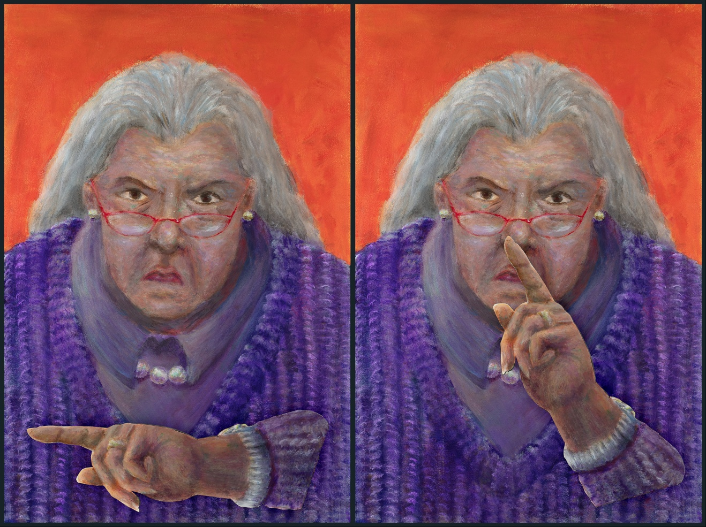
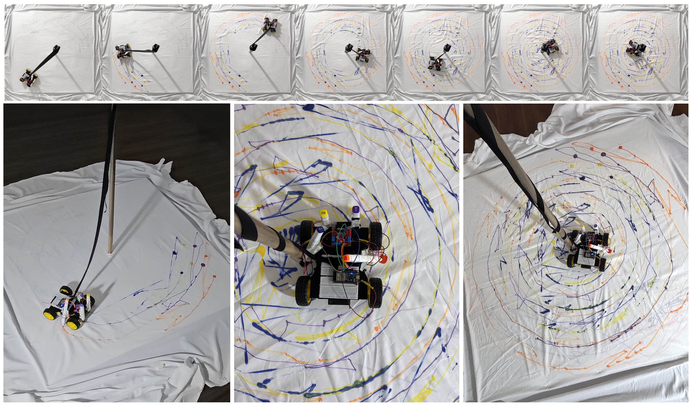
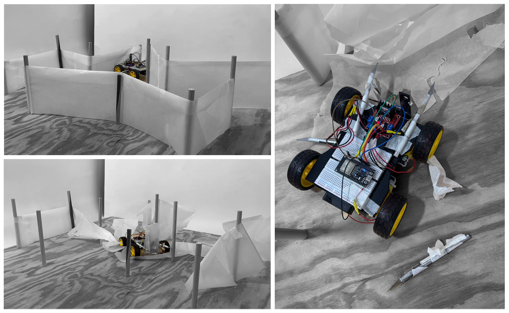
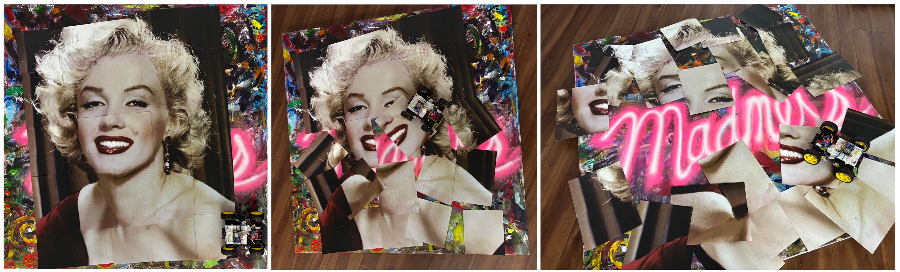
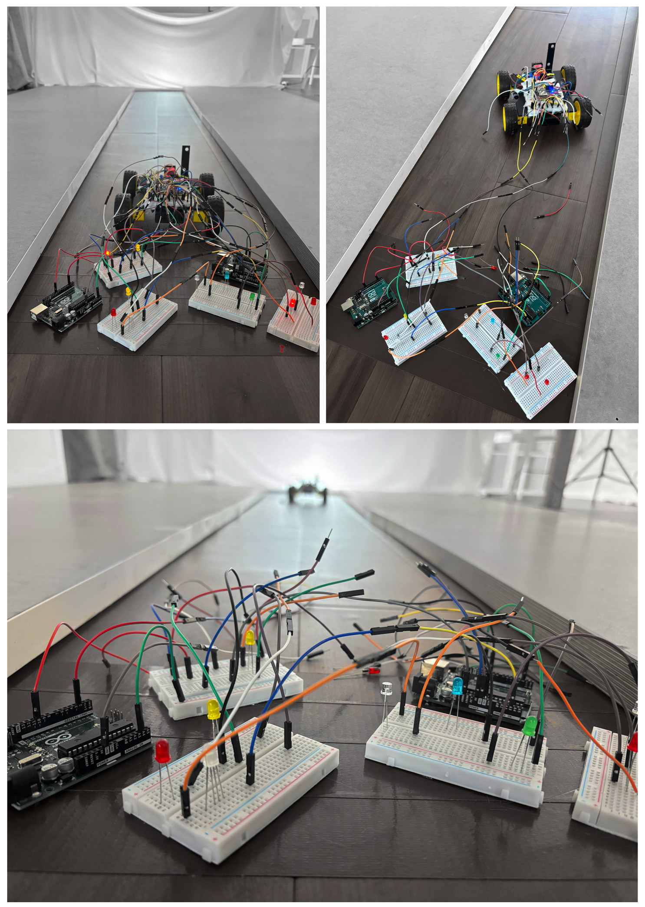
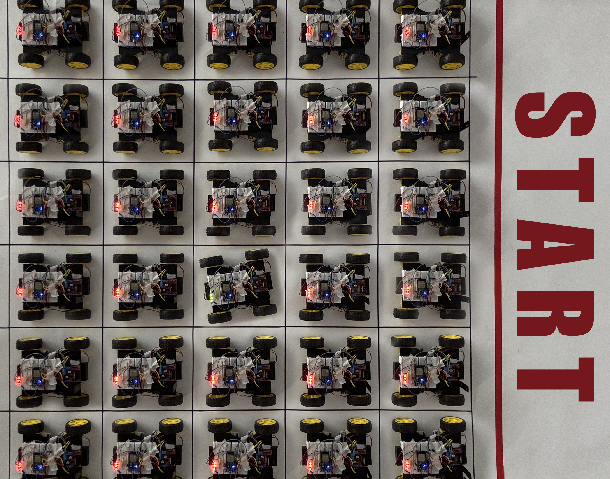
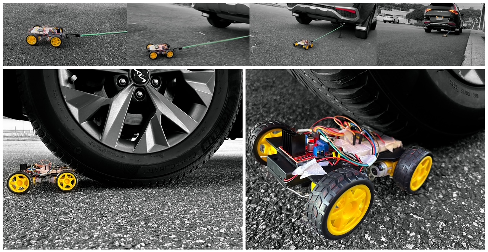
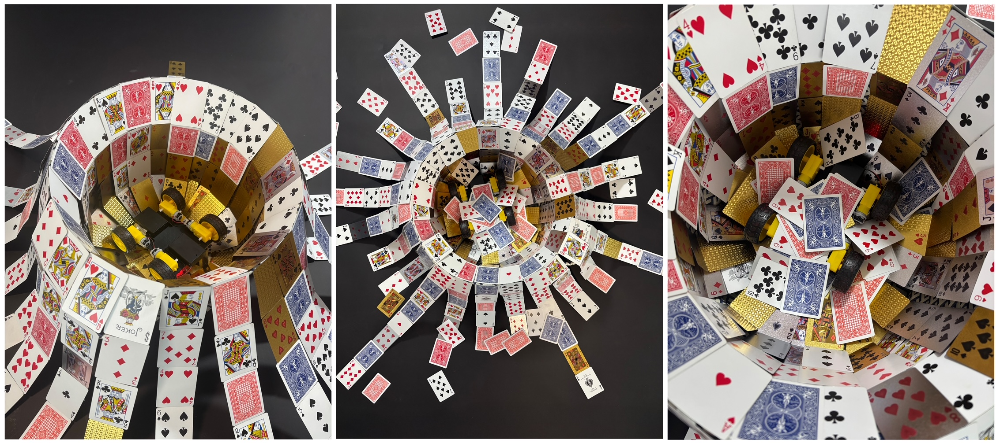

Bed Light

“Bedlight” is an interactive artwork that combines engineering and art. Each painting shows a boy with a blanket, and a light-sensitive system drives the movement of the blankets. When the room darkens, the blanket rises, covering the boy. As light returns, the blanket lowers, revealing the boy’s face.
The Librarian
“The Librarian” is an interactive artwork that combines engineering and art. What is first shown as a still painting comes to life when the audience makes too much noise; the grumpy librarian that hushes the audience, creating interaction between the art and the audience.
The Noose of Time
An RC car is tied to a pole in the middle, moving straight and trying to escape but keeps on getting strangled towards the middle. This reveals the life of any ordinary person: as life goes on, people's social boundaries and capabilities decrease, resulting in isolation and degradation.
A Web of Thoughts

An RC car goes through a web of strings that are positioned like a spider web, and the more the robot moves on the strings, the car gets more and more stuck on the strings, eventually strangling itself. This struggle alludes to depression and anxiety: an attempt to move forward often results in even more suffocation.
Collateral Damage
The car has blades attached to it, ripping through a paper maze, destroying and hurting everything around it. People often--with or without cognition--hurt others and the environment around them, but all that is left is more isolation and pain.
Madness
Marlyn Monroe, famously known for her beauty yet also the exploitation of it centers the piece, with the car scrambling it to pieces. As the picture is scrambled, it reveals the word "madness" underneath, showing how people's excessive and even stalker-like obsession towards others, often being more obsessed about others than oneself, can lead to destruction of others' lives.
Short-circuit
“The car is attached to a set of breadboards with wires, representing its past and people and connections. However, the rc car drives towards a path towards the light, breaking free from the wires and escaping the past. Throughout one’s life people are given choices to let go or hold onto the past: sometimes preserving old values and memories are important, but sometimes one must let go.
The Stalled Race
Identical cars are perfectly lined up behind a starting line, all cars lit up with a red light except one with a green light that cannot start moving because of the other cars. Perfectionism does not affect one’s final outcome but also the progress due to the necessity to have a perfect start; the cars cannot even start the race because they are too concentrated in being in the right place and having the right beginning. This piece serves as a reminder that striving for the ideal moment often keeps us from taking the first step.
Wheel of Fortune
The car is stuck in a wheel made out of poker cards, with poker cards sprinkling down onto the car as if it is getting buried. The car is flipped upside down hopelessly turning its wheels in an attempt to escape, showing the lack of control. This reflects the universal struggle of addiction: getting blinded by immediate rewards and getting betrayed by none other than yourself.
Atlas Machine
Excessive ambition often backfires, leaving pain and destruction. A mere RC car’s attempt to propel a real car is crushed under the weight that it cannot carry. This image mirrors the reality of a flame of passion that deceives one’s view, revealing not only failure but the fragility of persistence.